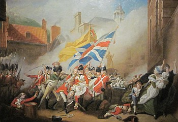

Duthant la niet du 5 dé janvyi, 1781, eune troupe Française d'à bein près 700, sous l'Baron de Rullecourt, attèrrîtent à La Rocque. Par sept heuthes lé lendemain au matîn les Français avaient prîns contrôle dé la Ville et emprisonné lé c'mandant des troupes Angliaîches.
Lé Captaine Hémery d'la Milice mênagit d's'êcapper à j'va jusqu'à dans l'Est et lus donnit là les nouvelles.
Lé Révérend François Le Couteur, Recteu d'St. Martîn et membre des Êtats et du Conmité d'la D'fense dé l'Île, fut avèrti d'l'învasion et s'en fut à La Rocque auvec deux canons qu'il avait acaté li-même pour la d'fense dé l'Île. Tout d'suite auprès lé message vînt du Mâjeur Peirson d'aller sus l'coup à san s'cours, mais d'vant qu'les soudards dé La Rocque arrivissent en Ville la Batâle avait 'té battue et gagnie.
")
Tandis qu'tout chenn'chîn 'tait à s'faithe, lé Mâjeur Corbet avait 'té prîns prisonnyi. Rullecourt sé comptait en chèrge et même arrangit des papièrs s'appointant Gouvèrneux. Lé Mâjeur Peirson, qui n'avait qu'24 ans, s'adonnit être offici en chèrge et s'mînt en tête. Au bas du Mont ès Pendus i' rencontrit des Français qui li dîtent dé mettre ses armes bas. Peirson rêponnit en Français, "Oui, nous porterons nos armes à la Maison de la Ville mais ce sera la baionnette au bout du fusil."
Peirson condisit ses hommes amont la Rue d'Driéthe, l'travèrs lé Coin ès Ânes pour lé Vièr Marchi et justément coumme l's affaithes allaient contre les Français i' fut tithé à mort. En sortant d'la Cour, Rullecourt êprouvit à encouothagi ses troupes mais i' fut tithé étout et mouothit à onze heuthes du sé.
Né v'chîn l'histouaithe sus tchi qué lé Sieur John Singleton Copley peignyit chu fanmeux portrait, "La Mort du Mâjeur Peirson", qu'les Jèrriais aiment app'ler la Batâle dé Jèrri.
Copley fut né à Boston en Améthique lé 3 d'juilet, 1737. En 1775, déjà r'connu coumme artiste, i' s'en vînt à Londres et huit ans auprès fu êlu membre dé l'Académie Royale.
Lé portrait fut c'menchi en 1783, deux ans auprès la Batâle. Ch'n'est pas bein seux si Copley vînt en Jèrri pour prendre des dessins, mais si i' n'vînt pas il en eut dé tchique aut' artiste. Philippe Jean, l'artiste Jèrriais, probabliément d'meuthait à Londres dans chu temps, car en 1787, trais ans aupres, Jean 'tait à d'meuther dans Cavendish Square, la préchaine route dé où'est qué Copley d'meuthait quand i' peignyit l'portrait.
Lé portrait fut exhibé dans l'mais d'mai, 1784. Lé prix d'entrée 'tait un ch'lîn et l'jour dévant chenna l'portrait, qui m'suthe huit pids un pouce par douze pids, fut apporté au Palais Buckingham et lé Rouai George III pâssit trais heuthes à l'examinner.
 Viyiz étout:
Viyiz étout: